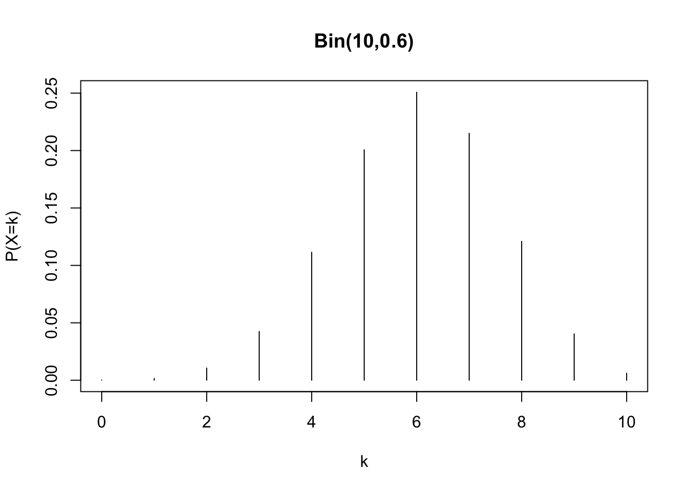
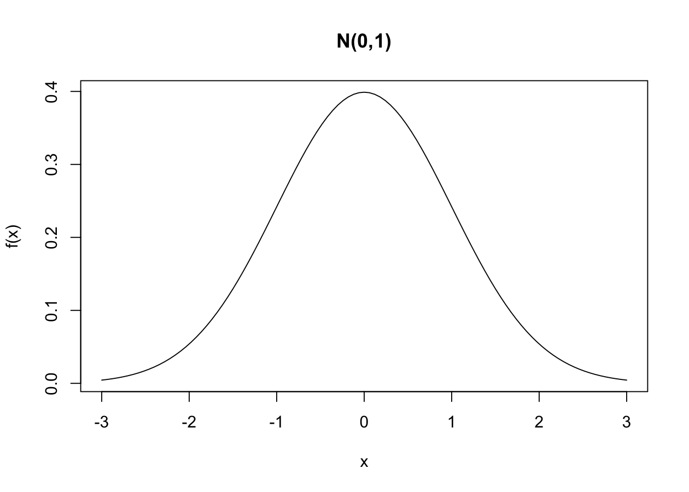
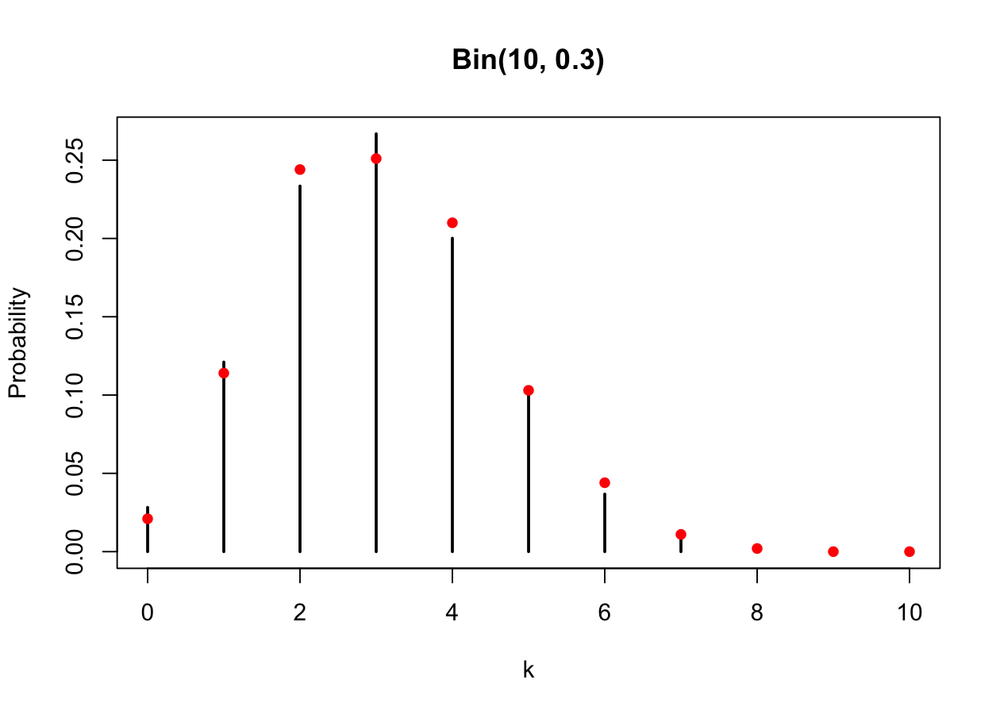
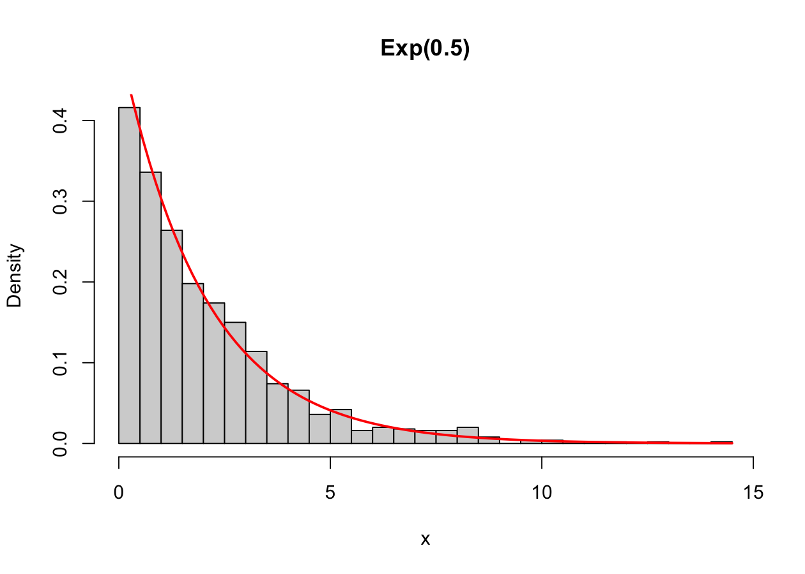
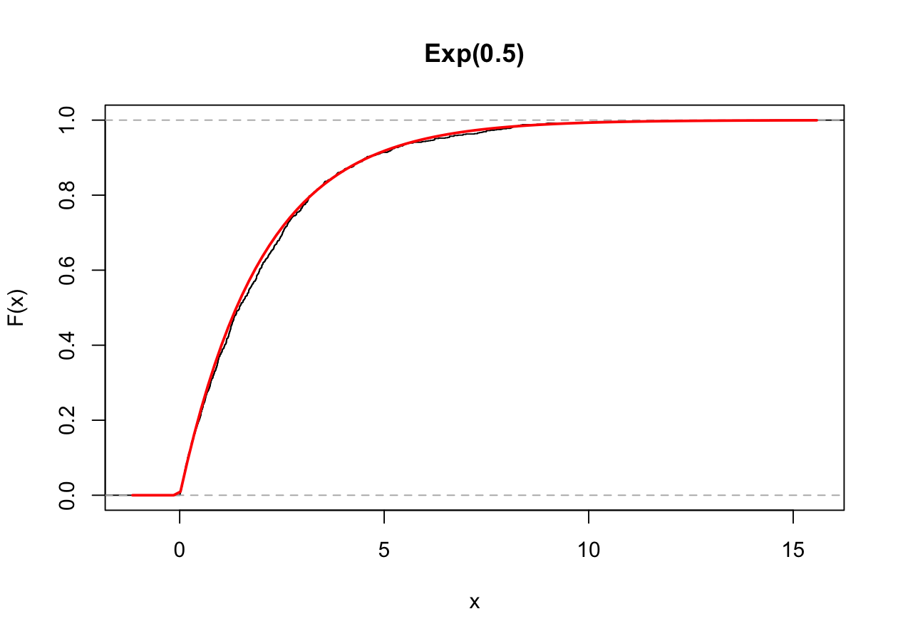
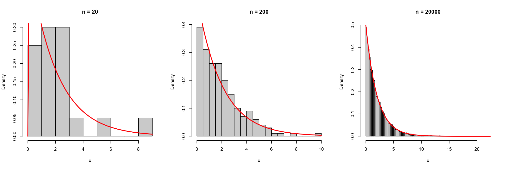

n <- 10 # Number of trials
p <- 0.6 # Probability of success
k <- 4 # Number of successes
choose(n, k) * p^k * (1 - p)^(n - k)[1] 0.1114767Programming and Data Analysis with R
The formal definition of a random variable involves concepts from measure theory (\sigma-algebras, probability measures, and so on), which we will leave in the background.
For the purposes of this course, it is enough to recall that a real-valued random variable X is uniquely identified by its cumulative distribution function, that is F(x) := \mathbb{P}(X \le x).
If the function F(x) is piecewise constant, we say that X is a discrete random variable.
If the function F(x) is continuous, we say that X is a continuous random variable.
As anticipated, a random variable is said to be discrete if F(x) is piecewise constant.
More precisely, we say that X is a discrete random variable if there exists a set of countable cardinality \mathcal{S} \subseteq \mathbb{R}, called the support, such that \mathbb{P}(X \in \mathcal{S}) = \sum_{x \in \mathcal{S}} \mathbb{P}(X = x) = 1.
In practice, we will often have that the support \mathcal{S} \subseteq \{0, 1, 2, \dots\} is a subset of the natural numbers. Moreover, the support \mathcal{S} can be finite.
Intuitively, we say that the random variable X can only take the values in the support \mathcal{S}.
The probability mass function of a discrete random variable is equal to p(x) = \mathbb{P}(X = x).
The function p(x) identifies a discrete random variable.
Therefore, of course, it holds that p(x) \ge 0 and that \sum_{x \in \mathcal{S}} p(x) = 1.
The expected value of a random variable is moreover defined, if it exists, as \mathbb{E}(X) = \sum_{x \in \mathcal{S}} x \: p(x).
More generally, the expected value of a transformation g(X), if it exists, is equal to \mathbb{E}\{g(X)\} = \sum_{x \in \mathcal{S}} g(x) \: p(x).
Let X \sim \text{Bin}(n, \pi) be a binomial random variable, so that the probability mass function is \mathbb{P}(X = k) = {n \choose k } \pi^k (1-\pi)^{n-k}, \qquad k=0,1,\dots,n.
Supposing that n = 10 and \pi = 0.6, then \mathbb{P}(X=4) is computed as follows:
n <- 10 # Number of trials
p <- 0.6 # Probability of success
k <- 4 # Number of successes
choose(n, k) * p^k * (1 - p)^(n - k)[1] 0.1114767However, in R there is a dedicated function to compute the probability mass function:
dbinom(k, size = n, prob = p)[1] 0.1114767In a similar way, we can also compute the following probability, that is
F(x) = \mathbb{P}(X \le x) = \sum_{k=0}^x\mathbb{P}(X = k), \qquad X \sim \text{Bin}(n, \pi).
Supposing that n = 10 and \pi = 0.6, then the value F(5) is computed as follows:
sum(dbinom(0:5, size = n, prob = p))[1] 0.3668967pbinom(5, size = n, prob = p) # Specific R function[1] 0.3668967Suppose instead that we are interested in the complementary event, that is: \mathbb{P}(X > 5) = 1 - \mathbb{P}(X \le 5).
1 - pbinom(5, size = n, prob = p)[1] 0.6331033pbinom(5, size = n, prob = p, lower.tail = FALSE)[1] 0.6331033The expected value of a binomial random variable is equal to
\mathbb{E}(X) = \sum_{k=0}^n k \: \mathbb{P}(X = k) = n\pi, \qquad X \sim \text{Bin}(n,\pi).
Supposing as before that n = 10 and \pi = 0.6, we have that:
n * p # Expected value obtained through analytical computations[1] 6sum(0:n * dbinom(0:n, size = n, prob = 0.6)) # Numerical computation[1] 6Through direct computation, we can moreover evaluate for example \mathbb{E}(\sqrt{X}), indeed:
sum(sqrt(0:n) * dbinom(0:n, size = n, prob = 0.6))[1] 2.427083The p-quantile of a discrete distribution is the smallest value k such that \mathbb{P}(X \le k) \ge p. Hence: \mathcal{Q}(p) = \inf\{x \in \mathbb{R} : F(x) \ge p \}.
Supposing that X \sim \text{Bin}(10, 0.6), the first quartile for example is
\mathcal{Q}(0.25) = \inf\{x \in \mathbb{R} : F(x) \ge 0.25 \} = 5.
In R we can obtain these results as follows:
qbinom(0.25, size = 10, prob = 0.6) # First quartile[1] 5Indeed, it holds that:
pbinom(4, size = 10, prob = 0.6) # The value is smaller than 0.25[1] 0.1662386pbinom(5, size = 10, prob = 0.6) # The value is larger than 0.25[1] 0.3668967kk <- 0:n
prob <- dbinom(0:n, size = n, prob = p)
plot(kk, prob, type = "h", main = "Bin(10,0.6)", xlab = "k", ylab = "P(X=k)")
A random variable is said to be continuous if F(x) is continuous.
The density function of a continuous random variable is a function f(x) \ge 0 such that \mathbb{P}(a < X < b) = \int_a^b f(x) \mathrm{d} x, \qquad f(x) = \frac{\partial}{\partial x} F(x).
Therefore, by definition: \mathbb{P}(X \le b) = F(b) = \int_{-\infty}^b f(x) \mathrm{d} x.
Moreover, the expected value of a transformation g(X), if it exists, is equal to \mathbb{E}\{g(X)\} = \int_{\mathbb{R}} g(x) \: f(x) \mathrm{d} x.
Let X \sim \text{N}(\mu, \sigma^2) be a Gaussian variable with mean \mu and variance \sigma^2, that is having density f(x) = \frac{1}{\sqrt{2 \pi \sigma^2}}\exp\left\{-\frac{1}{2\sigma^2}(x - \mu)^2\right\}.
If X \sim \text{N}(3, 10) then we can compute the value f(1) using the R commands:
x <- 1 # Point at which to compute f(x)
mu <- 3 # Mean
sigma2 <- 10 # Variance
1 / sqrt(2 * pi * sigma2) * exp(-1 / (2 * sigma2) * (x - mu)^2)[1] 0.1032883dnorm(x, mean = 3, sd = sqrt(sigma2))[1] 0.1032883Let X \sim \text{N}(0,1) be a standard normal. We are interested in computing the probability of the following event: \mathbb{P}(|X| \le 1) = \mathbb{P}(-1 \le X \le 1) = \mathbb{P}(X \le 1) - \mathbb{P}(X < -1).
We can compute this probability (in an inefficient way) through the command integrate, therefore:
integrate(dnorm, lower = -1, upper = 1)0.6826895 with absolute error < 7.6e-15Since we are dealing with a continuous variable, we obtain that \mathbb{P}(X < -1) = \mathbb{P}(X \le -1).
Hence, we can compute this probability in R using the dedicated commands:
pnorm(1) - pnorm(-1)[1] 0.6826895The continuity of the cumulative distribution function F(x) implies that the quantile function is equal to \mathcal{Q}(\cdot) = F^{-1}(\cdot).
For example, consider the third quartile of a standard normal distribution, that is
qnorm(0.75)[1] 0.6744898As a consequence, the quantile and the cumulative distribution functions are such that F(\mathcal{Q}(0.75)) = F(F^{-1}(0.75))= 0.75.
Indeed:
pnorm(qnorm(0.75))[1] 0.75curve(dnorm(x, mean = 0, sd = 1), from = -3, to = 3, ylab = "f(x)", main = "N(0,1)")
R has an extensive collection of functions dedicated to the main probability distributions. Let X be a random variable.
ddist (where the initial d stands for density). Computes the density f(x) of a continuous variable X, or the probability mass function p(x) = \mathbb{P}(X = x) in case X is discrete.
pdist (where the initial p stands for probability), which makes it possible to compute the value of the cumulative distribution function at a specified point, that is it computes F(x) = \mathbb{P}(X \le x).
qdist (where the initial q stands for quantile), which represents the quantile function, that is:
\mathcal{Q}(p) = \inf\{x \in \mathbb{R} : F(x) \ge p\}, \qquad p \in (0,1).
rdist (where the initial r stands for random), which makes it possible to generate pseudo-random numbers, illustrated below.
| Distribution | Command | Parameters | Default |
|---|---|---|---|
| Binomial | binom |
size, prob |
- |
| Geometric | geom |
prob |
- |
| Poisson | pois |
lambda |
- |
| Uniform | unif |
min, max |
0, 1 |
| Gamma | gamma |
shape, rate |
-, 1 |
| Exponential | exp |
rate |
1 |
| Chi-squared | chisq |
df |
- |
| Normal | norm |
mean, sd |
0, 1 |
The fourth class of functions in our list is the one of type rdist, which makes it possible to obtain random values from a distribution.
For example, to sample 5 independent and identically distributed (iid) values from a standard normal, that is X_i \overset{\text{iid}}{\sim} \text{N}(0,1), \qquad i=1,\dots,5 we can use in R the following command:
R <- 5
rnorm(R, mean = 0, sd = 1)[1] 1.3834913 -0.8788476 -0.4515607 -1.0836992 0.7435476The values generated by the command rdist imitate the results of a random process, but they are in fact deterministic. Such values are therefore called pseudo-random.
There actually exist methods to generate truly random numbers, based for instance on atmospheric measurements.
At the website https://www.random.org/gaussian-distributions/ it is possible to obtain a limited number of random values from a Gaussian distribution.
The disadvantage of this latter class of methods is that they are relatively expensive to obtain \implies is it worth it?
Unless there are specific security concerns, pseudo-random numbers are the standard used by almost all users.
A six-sided die represents a discrete random variable X with probability mass function called Discrete Uniform, that is
\mathbb{P}(X = k) = \frac{1}{6}, \qquad k=1,\dots,6.
To simulate the roll of a six-sided die, we first build a vector containing a sequence of numbers from 1 to 6 corresponding to the possible outcomes of the roll.
dice <- 1:6We can use the command sample to perform the roll:
set.seed(123) # R command to fix the "seed"
sample(x = dice, size = 1) # size = 1 implies that a single die is rolled[1] 3sample commandMore generally, the function sample(x, size, replace, prob) randomly draws a number size of elements from an urn containing the objects x
replace = TRUE;replace = FALSE.If the argument prob is not specified, the function sample assigns equal probability to every element of x.
If we wanted to sample with non-uniform probabilities, we would have to provide a vector of probabilities of length equal to the number of elements of x (try it as an exercise!)
Sampling with replacement is equivalent to making n independent draws from the same random variable X. Therefore, to roll the same die 10 times:
set.seed(140)
n <- 10
# replace = TRUE implies that the die is rolled 10 times
sim <- sample(dice, size = n, replace = TRUE)
sim [1] 3 1 1 1 3 6 4 5 1 6To perform a hypothetical lottery draw, one has to draw from an urn 5 numbers, between 1 and 90, without replacement.
In R therefore:
sample(1:90, size = 5, replace = FALSE)[1] 64 53 87 83 61If we only specify the following command:
sample(dice)[1] 5 3 1 2 6 4we obtain a random permutation of the elements of x.
Indeed, the default values are replace = FALSE and size = length(x), that is a sampling without replacement of all the elements of the urn.
The commands of the d, p, q and r families can be combined to check graphically that a simulated sample really does follow the distribution it is supposed to follow. This is the idea behind this exercise.
Simulate n = 1000 values from a \text{Bin}(10, 0.3) and compute the relative frequencies of each outcome k = 0,1,\dots,10.
Draw the probability mass function with plot(..., type = "h"), as we did above, and superimpose the relative frequencies. Do the two agree?
Simulate n = 1000 values from an exponential distribution with rate \lambda = 0.5.
Draw the histogram of the simulated values and superimpose the theoretical density, using curve(..., add = TRUE).
Draw the empirical cumulative distribution function of the simulated values, which we met in Unit D, and superimpose the theoretical one.
Compare the empirical quantiles of the sample with the theoretical ones, for p = (0.1, 0.25, 0.5, 0.75, 0.9).
Repeat point 4 for n = 20, n = 200 and n = 20000. What changes?
For the discrete case, the relative frequencies of the simulated sample are very close to the probability mass function:
set.seed(321)
n <- 1000
size <- 10
prob <- 0.3
y <- rbinom(n, size = size, prob = prob)
freq_rel <- table(factor(y, levels = 0:size)) / n
plot(0:size, dbinom(0:size, size = size, prob = prob),
type = "h", lwd = 2,
xlab = "k", ylab = "Probability", main = "Bin(10, 0.3)"
)
points(0:size, freq_rel, col = "red", pch = 16) # Relative frequencies
# Largest discrepancy between theoretical and empirical
max(abs(dbinom(0:size, size = size, prob = prob) - as.numeric(freq_rel)))[1] 0.01582793For the continuous case, we superimpose the density on the histogram. Note the option freq = FALSE: the histogram must be on the density scale, otherwise the two objects are not comparable.
set.seed(123)
n <- 1000
lambda <- 0.5
x <- rexp(n, rate = lambda)
hist(x, freq = FALSE, breaks = 30, main = "Exp(0.5)", xlab = "x")
curve(dexp(x, rate = lambda), add = TRUE, col = "red", lwd = 2)
The same comparison can be made on the cumulative distribution function:
plot(ecdf(x), do.points = FALSE, main = "Exp(0.5)", xlab = "x", ylab = "F(x)")
curve(pexp(x, rate = lambda), add = TRUE, col = "red", lwd = 2)
Finally, we compare the quantiles:
p <- c(0.1, 0.25, 0.5, 0.75, 0.9)
rbind(
theoretical = qexp(p, rate = lambda),
empirical = quantile(x, probs = p)
) 10% 25% 50% 75% 90%
theoretical 0.2107210 0.5753641 1.386294 2.772589 4.605170
empirical 0.1972495 0.6133854 1.462333 2.853270 4.559843The sample size controls how close the two curves are. With n = 20 the histogram says very little about the underlying density; with n = 20000 the agreement is excellent.
set.seed(1)
par(mfrow = c(1, 3))
for (nn in c(20, 200, 20000)) {
xx <- rexp(nn, rate = lambda)
hist(xx, freq = FALSE, breaks = "FD", main = paste("n =", nn), xlab = "x")
curve(dexp(x, rate = lambda), add = TRUE, col = "red", lwd = 2)
}
par(mfrow = c(1, 1))